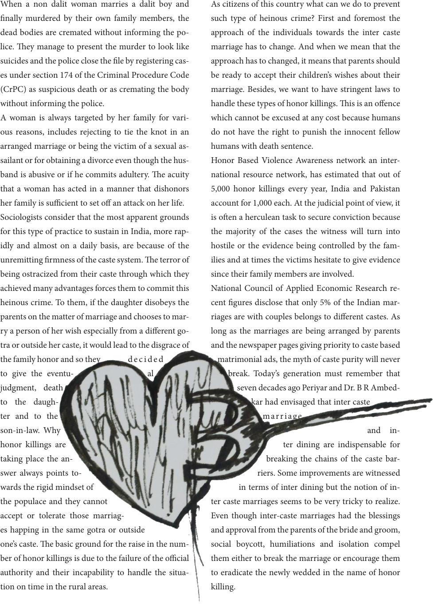

When a non dalit woman marries a dalit boy and
nally murdered by their own family members, the
dead bodies are cremated without informing the po-
lice. ey manage to present the murder to look like
suicides and the police close the le by registering cas-
es under section 174 of the Criminal Procedure Code
(CrPC) as suspicious death or as cremating the body
without informing the police.
A woman is always targeted by her family for vari-
ous reasons, includes rejecting to tie the knot in an
arranged marriage or being the victim of a sexual as-
sailant or for obtaining a divorce even though the hus-
band is abusive or if he commits adultery. e acuity
that a woman has acted in a manner that dishonors
her family is sucient to set o an attack on her life.
Sociologists consider that the most apparent grounds
for this type of practice to sustain in India, more rap-
idly and almost on a daily basis, are because of the
unremitting rmness of the caste system. e terror of
being ostracized from their caste through which they
achieved many advantages forces them to commit this
heinous crime. To them, if the daughter disobeys the
parents on the matter of marriage and chooses to mar-
ry a person of her wish especially from a dierent go-
tra or outside her caste, it would lead to the disgrace of
the family honor and so they decided
to give the eventu- al
judgment, death
to the daugh-
ter and to the
son-in-law. Why
honor killings are
taking place the an-
swer always points to-
wards the rigid mindset of
the populace and they cannot
accept or tolerate those marriag-
es happing in the same gotra or outside
one’s caste. e basic ground for the raise in the num-
ber of honor killings is due to the failure of the ocial
authority and their incapability to handle the situa-
tion on time in the rural areas.
As citizens of this country what can we do to prevent
such type of heinous crime? First and foremost the
approach of the individuals towards the inter caste
marriage has to change. And when we mean that the
approach has to changed, it means that parents should
be ready to accept their children’s wishes about their
marriage. Besides, we want to have stringent laws to
handle these types of honor killings. is is an oence
which cannot be excused at any cost because humans
do not have the right to punish the innocent fellow
humans with death sentence.
Honor Based Violence Awareness network an inter-
national resource network, has estimated that out of
5,000 honor killings every year, India and Pakistan
account for 1,000 each. At the judicial point of view, it
is oen a herculean task to secure conviction because
the majority of the cases the witness will turn into
hostile or the evidence being controlled by the fam-
ilies and at times the victims hesitate to give evidence
since their family members are involved.
National Council of Applied Economic Research re-
cent gures disclose that only 5% of the Indian mar-
riages are with couples belongs to dierent castes. As
long as the marriages are being arranged by parents
and the newspaper pages giving priority to caste based
matrimonial ads, the myth of caste purity will never
break. Today’s generation must remember that
seven decades ago Periyar and Dr. B R Ambed-
kar had envisaged that inter caste
marriage
and in-
ter dining are indispensable for
breaking the chains of the caste bar-
riers. Some improvements are witnessed
in terms of inter dining but the notion of in-
ter caste marriages seems to be very tricky to realize.
Even though inter-caste marriages had the blessings
and approval from the parents of the bride and groom,
social boycott, humiliations and isolation compel
them either to break the marriage or encourage them
to eradicate the newly wedded in the name of honor
killing.